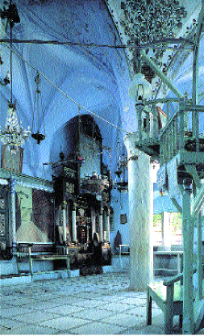

Abuhav Synagogue (Safed, Israel)
CONCLUSION OF NISHMAT
GOD, ALL POWER YOURS. YOUR NAME~SHINY1. STRONG FOREVER. YOUR WONDERFUL* WORK PROVE WE AMAZED SHOULD. KING, YOU SIT THRONE2 FAR-AWAY ADVANCED3.
YOU LIVE FOREVER. YOUR NAME ADVANCED, HOLY. LIKE PSALM SAY, SING HAPPY, (2h)YOU FOLLOW HIS LAW. APPROPRIATE UPRIGHT4 PRAISE HIM.
UPRIGHT PEOPLE PRAISE YOU WILL.
THEY FOLLOW YOUR LAW, #DO-DO? BOW-DOWN.
THEY WORSHIP"over time", RECOGNIZE YOU ADVANCED.
PEOPLE HOLY ANNOUNCE, YOU HOLY FINISH.
UP-TO-NOW YOUR JEWISH PEOPLE ASSEMBLE5++ SCADS-OF6. THEY HAPPY SING, SHOW"all" YOUR GLORY7, OUR KING. (CONTINUE PRAY QUIET)... [The interpreter should wait until the Reader begins again aloud.] THAT* PASS-DOWN FOREVER. DUTY (2h)#ALL8 LIVE THING "WHAT"? APPROACH9 YOU, LORD OUR GOD AND GOD FOR OUR FOREFATHERS10. THANK, PRAISE, DEAF-APPLAUSE, SHOW"all" YOUR GLORY, YOU ADVANCED, WORSHIP, BLESS, LIFT-UP11, SING, MORE-THAN12 KING-DAVID13 (<) SING, (>) PRAISE, HIS FATHER J-E-S-S-E YOUR SERVANT, YOUR ANOINTED14.
REALLY-WANT15 (2h)#ALL, (<) HEAVEN, (>) EARTH BOTH, PRAISE YOUR NAME FOREVER. YOU OUR KING, GOD, KING WONDERFUL* AND HOLY. WHY? YOU LORD, OUR GOD, PLUS GOD FOR OUR FOREFATHERS, MEAN APPROPRIATE SING, PRAISE, ADMIT YOUR POWER, CONTROL, WONDERFUL*, STRONG, HOLY. WE BLESS, THANK YOU FROM-NOW-ON16 FOREVER. WE PRAISE YOU LORD, GOD. KING ADVANCED, WE PRAISE YOU. GOD, WE THANK++ YOU. (2h)#ALL MIRACLE FROM YOU. YOU WANT PRAISE THROUGH SONG. KING, GOD, #DO-DO? LIFE GIFT-TO"all"17.
KADDISH
GOD HIS NAME~SHINY, HOLY*. PRAISE GOD. WE MUST ANNOUNCE HIS WORTH. SPREAD WORLD~THEREABOUTS18 HE HIMSELF MAKE.
HOPE DURING YOUR"all" LIFE TIME-PERIOD EVERYONE ACCEPT AUTHORITY HIS-GOD's, #ALL-OF-YOU19 #WILL. WE JEWISH PEOPLE SIN LONG-LIST20 SAY, AMEN.
Cong. HOPE HE CONTINUE BLESS US FROM-NOW-ON, FOREVER.
WE ANNOUNCE HE BLESS US. HIS NAME~SHINY, ADVANCED; WE PRAISE GOD. WE HONOR GOD. WE ADMIT HIS NAME HOLY. PRAISE GOD. WE REALIZE (1-OF-3)21 ANNOUNCE, (2-OF-3) HONOR, (3-OF-3) PRAISE, INDEX-LIST-OF-322 #WILL. WE JEWISH PEOPLE SIN LONG-LIST NOT ENOUGH. #ALL-OF-YOU SAY, AMEN.
ADMIT LORD, WE NEED PRAISE HIM.
WE WILL PRAISE LORD FROM-NOW-ON FOREVER.
LORD OUR GOD, KING WORLD~GENERAL, YOU BLESS. HOW? INVENT MAKE LIGHT, SEPARATE-TO-lf. DARK, SEPARATE-TO-rt. YOU CAUSE PEACE, INVENT MAKE WORLD~GENERAL. (CONTINUE PRAY QUIET)...
(<) (2h)#ALL ANGEL, GOD CHERISH. (>) (2h)#ALL PERFECT. (<) (2h)#ALL STRONG*. (>) BUT (2h)#ALL DO ANY THING GOD COMMAND, BOW-DOWN, RESPECT. (2h)#ALL SING, THEIR HEART PURE23, HOLY. THEY BLESS, PRAISE, SHOW"all" HIS GLORY, RESPECT, RECOGNIZE HOLY, ANNOUNCE HE KING.
APPLY GOD HIS NAME, ITSELF ADVANCED, STRONG*. AMAZING KING, HIMSELF HOLY. (CONTINUE PRAY QUIET)...
(2h)#ALL ACCEPT EACH-OTHER24 BURDEN, THAT HEAVEN REQUIRE CONTROL LIKE KING. THEY PERMIT EACH-OTHER RECOGNIZE THEIR CREATOR HOLY. THEY NOT HURRY, SPEAK CLEAR, SWEET. ANNOUNCE SAME~TIME25 AMAZED HE HOLY.
HOLY++-upward. LORD HIMSELF CONTROL US. EARTH~GENERAL SHOW"all" AUTHORITY HIS.
THEY-lf (<) ANGEL ROLL26, (>) ANGEL TOP* HOLY #DO-DO? (2h)5wg-CL'float upwards'27, (2h)4-CL'look to right'28 THEY-rt ANGEL, BODY-BURN29. THEY-lf PRAISE, SAY "WHAT"?
WE (<) PRAISE, (>) HONOR LORD. WHERE FROM? HIS SPECIAL PLACE.
(CONTINUE PRAY QUIET)...
LIKE PSALM SAY, QUOTE THANK HIMSELF MAKE SUN, MOON, STAR SCADS-OF. HIS MERCY-ON-us CONTINUE FOREVER. REALLY-WANT YOU SHINE-ON MOUNTAIN Z-I-O-N PLUS #ALL-OF-US30 WORTH HAVE THAT. WE PRAISE YOU LORD. WHY? YOU MAKE SUN, MOON, STAR SCADS-OF.
(CONTINUE PRAY QUIET)...
BRING PEACE NORTH, SOUTH, EAST, WEST. LEAD US PROUD UPRIGHT TO OUR LAND. WHY? YOU SAVE US CAN. WORLD HAVE MANY (<) PEOPLE, (>) LANGUAGE, DIFFERENT++, BUT YOU CHOOSE-us US. PLUS YOU BRING US CLOSE YOUR WONDERFUL* NAME FOREVER TRUE~BIZ31. FOR-FOR? (<) THANK+, (>) PRAISE+ YOU. ANNOUNCE YOU ONE* WITH L-O-V-E. WE PRAISE YOU LORD. WHY? YOU CHOOSE JEWISH PEOPLE WITH L-O-V-E.
JEWISH PEOPLE, ATTEND-TO-me, KNOW-THAT40 LORD
HIMSELF OUR GOD. LORD, ONLY-ONE41. (CONTINUE PRAY QUIET)...
ME LORD YOUR"all" GOD, TRUE~BIZ. (CONTINUE PRAY QUIET)...
FOR OUR FOREFATHERS, FOR US, FOR OUR CHILDREN, FROM JACOB34 YOUR SERVANT PASS-DOWN FOREVER. (CONTINUE PRAY QUIET)...
TRUE~BIZ YOU LORD, (<) OUR GOD, (>) GOD OUR FOREFATHERS; (<) OUR KING, (>) KING OUR FOREFATHERS; (<) PAY-OFF35 OUR DEBT, (>) PLUS FOR OUR FOREFATHERS. OUR CREATOR, FOUNDATION OUR SALVATION, OPPRESSION-OFF36, SAVIOR, INDEX-LIST37 YOUR NAME ALWAYS. OTHER GOD, HAVE-NONE38. (CONTINUE PRAY QUIET)...
WE PRAISE GOD SUPREME39, WE JOIN THEM BLESS YOU. LONG-AGO GOD CONTROL"each" JEWISH PEOPLE, THEY-lf ACCEPT. THEY-lf SING TOGETHER MOSES40 KINDLE41. LORD WHO HAVE AUTHORITY LIKE YOU. YOU HOLY* SHINE-DOWN. PEOPLE SCADS-OF PRAISE++ YOU. YOU WORK WONDERFUL*. WHO LIKE YOU? HAVE-NONE. LONG-AGO JEWISH PEOPLE THEY-lf CONFRONT RED SEA, YOU SEPARATE++-away. YOUR POWER, CLEAR. THEY-lf SHOCKED. HE, OUR GOD. ALLOW LORD CONTINUE CONTROL THINK~LIKE KING FOREVER. TORAH42, TELL-STORY. alt.LONG-AGO JACOB, SELF SLAVE. BUT LORD OPPRESSION-OFF. LORD, WE PRAISE YOU. WHY? HE WILLING OPPRESSION-OFF, JEWISH PEOPLE SAVED. (CONTINUE PRAY QUIET)...
LORD, OUR GOD, OUR FOREFATHERS, (1) ABRAHAM43, (2) ISAAC44, (3) JACOB, WORSHIP YOU. PASS-DOWN'bit by bit'. WE ALSO WORSHIP YOU. YOURSELF-God STRONG*, ADVANCED*, WONDERFUL*. WORLD~GENERAL, YOU CONTROL. EVERYTHING GOOD, YOU alt.GIFT-TO"each". INDEX-LIST-OF-3, INTERNALIZE45 YOUR LAW, MEAN JEWISH PEOPLE HAVE RIGHT YOU SEND MESSIAH SAVE US. WHY? YOU LOVE US. WE PRAISE YOU. WHY? YOU LORD, GOD, KING ADVANCED THROUGH PRAISE, APPROPRIATE THANK++, CAUSE MIRACLE46, ENJOY OUR MUSIC, KING, GOD, (2h)#ALL LIFE FROM YOU.
YOU KING, HELPER, SAVIOR, PROTECTOR. WE PRAISE YOU, LORD. WHY? YOU PROTECT ABRAHAM IDEA~LIKE SHIELD47.
SUPPOSE SOMEONE DIE. YOU SUMMON, GET-UP LIVE. POWER YOURS+ CONTINUE FOREVER. YOU HELP-ctr LIVE CONTINUE.
On Simchat Torah and Pesach add:
HE (<) CAUSE WIND, (>) ENCOURAGE RAIN.
YOU SOFT-HEARTED. SOMEONE DIE, YOU HAVE-MERCY-ON-ctr. (2h)COME-ON, GET-UP, LIVE FOREVER CAN. (<) SOMEONE FAIL, YOU SUPPORT. (>) SOMEONE SICK, YOU HELP RECOVER. (<) OPPRESSION48, YOU OPPRESSION-OFF. (>) SOMEONE LOWERED-INTO-GRAVE49 GRAVE, TRUST YOU HELP-ctr CAN. WHO HAVE POWER LIKE YOU WHO? IDEA~LIKE KING, (<) BLAME RIGHT, GO-AHEAD50 KILL, (>) BLAME WRONG, ALLOW LIFE. SAVE, YOURS+.
WE TRUST YOU, SOMEONE DIE. YOU SUMMON, GET-UP LIVE. WE PRAISE. WHY? YOU HELP DEAD, GET-UP LIVE.
KEDUSHAH
Congregation, then Reader: (2h)1-HERE51 WORLD WE ANNOUNCE YOUR NAME HOLY, here-SAME-AS-Heaven HEAVEN ANNOUNCE HOLY. LIKE PROPHET WRITE, QUOTE, ANGEL THEY-'in Heaven' CALL-ON EACH-OTHER ANNOUNCE:
All: HOLY++-upward. LORD HIMSELF CONTROL US. EARTH~GENERAL SHOW"all" AUTHORITY HIS.
Congregation, then Reader: HIT* SOUND"pow" SPREAD, (<) POWERFUL, (>) STRONG*. REGULAR ANGEL, THEIR VOICE INCREASE++ EQUAL ANGEL BODY-BURN. SAY "WHAT"?
All: WE (<) PRAISE, (>) HONOR LORD. WHERE FROM? HIS SPECIAL PLACE.
Congregation, then Reader: FROM YOUR PLACE, OUR KING, YOU SHOW-UP CONTROL US LIKE KING, WE LOOK-FORWARD"over time" THAT. YOU CONTROL FROM MOUNTAIN Z-I-O-N WHEN? SOON, DURING OUR LIFE TIME, FOREVER FOREVER. REALLY-WANT YOU LIVE THERE. REALLY-WANT YOU ADVANCED, PEOPLE RECOGNIZE HOLY IN JERUSALEM, YOUR CITY, GENERATION"step by step" FOREVER. REALLY-WANT WITNESS YOUR KINGDOM LIKE SONG EXPRESS YOU STRONG, WHO WRITE? KING-DAVID YOUR ANOINTED KING UPRIGHT. SAY "WHAT"?
All: LORD CONTROL LIKE KING FOREVER. MOUNTAIN ZION ITS GOD, GENERATION"step by step", HALLELUJAH.
Reader only: GENERATION"step by step" WE TELL-STORY YOU WONDERFUL. ANNOUNCE YOU HOLY FOREVER FOREVER. WE STOP TALK++ PRAISE YOU OUR GOD NEVER. WHY? GOD YOURSELF KING WONDERFUL, HOLY. LORD, WE PRAISE YOU. WHY? YOURSELF GOD HOLY.
All the text in grey from here to end is for the Sabbath, unless otherwise stated.
YOU GIFT-TO-us US, LORD, OUR GOD, WITH LOVE SABBATH REST ASSEMBLE HAPPY, HOLIDAY52 CELEBRATE, TODAY SABBATH PLUS
On Passover: HOLIDAY PASSOVER53, TIME-PERIOD WE OPPRESSION-OFF,
On Shavuot: HOLIDAY SHAVUOT54, TIME-PERIOD YOU GIFT-TO-us TORAH,
On Sukkot: HOLIDAY SUKKOT55, TIME-PERIOD WE HAPPY,
On Shemini Atzeret and Simchat Torah: HOLIDAY EIGHTH DAY ASSEMBLE, TIME-PERIOD WE HAPPY,
PLEASE REMEMBER JEWISH PEOPLE THEMSELVES-lf GO-AHEAD KIND, HAVE-MERCY-ON-lf. WHY? REMEMBER OUR FOREFATHERS WORSHIP GOD, PASS-DOWN. WE ALSO WORSHIP GOD. REMEMBER KING-DAVID YOUR SERVANT PASS-DOWN ANOINTED KING SAVE US WILL. REMEMBER JERUSALEM YOUR CITY HOLY. REMEMBER (2h)#ALL JEWISH PEOPLE. CAUSE US (<) LIVE SMOOTH, (>) HAVE PEACE DURING TODAY
On Sukkot: HOLIDAY SUKKOT.
On Shavuot: HOLIDAY SHAVUOT.
On Shemini Atzeret and Simchat Torah: HOLIDAY EIGHTH DAY ASSEMBLE.
LORD OUR GOD, PLEASE REMEMBER alt.GIFT-TO-us US GOOD~THINGS. BLESS OUR LIFE. YOU PROMISE SAVE US, alt.GIVE-FROM-HEART-TO-lf57. (<) HAVE-MERCY-ON-us US, (>) SAVE US. WE LOOK-TO GOD HELP-us. WHY? GOD IDEA~LIKE KING HAVE-MERCY-ON-lf, alt.GIVE-FROM-HEART-TO-lf.
WHILE WE ASSEMBLE, CELEBRATE, BLESS US, LORD, OUR GOD. HOW? LIFE, PEACE, HAPPY, THRILLED, LIKE YOU WANT PLUS PROMISE BLESS US. OUR GOD PLUS GOD FOR OUR FOREFATHERS, ACCEPT OUR REST. MAKE US HOLY THROUGH YOUR COMMANDMENTS PLUS ALLOW US INNVOLVED YOUR TORAH. MAKE US SATISFIED US WITH YOUR GOOD THINGS PLUS HAPPY ABOUT YOUR SALVATION. MAKE OUR HEART PURE SERVE YOU TRUE~BIZ. PASS-DOWN FOR US, LORD, OUR GOD, WITH LOVE AND PREFER, HAPPY AND THRILLED, SABBATH AND ASSEMBLE HOLY YOURS. WE REALLY-WANT JEWISH PEOPLE, THEMSELVES MAKE YOUR NAME HOLY, CELEBRATE TOGETHER YOU. LORD, OUR GOD, WE PRAISE. WHY? YOUSELF MAKE HOLY SABBATH, JEWISH PEOPLE, PLUS YOUR SPECIAL TIME-PERIOD.
SHOW-us FAVOR58, LORD OUR GOD, WE JEWISH PEOPLE AND OUR PRAYER. WE REALLY-WANT GO-#BACK59 SERVE IN TOP* HOLY PLACE IN TEMPLE. JEWISH FIRE OFFERING AND PRAYER, PLEASE ACCEPT WITH L-O-V-E, WITH FAVOR. REALLY-WANT YOUR PEOPLE SERVE, YOU SATISFIED ALWAYS.
REALLY-WANT OUR EYES WITNESS60 YOU MERCY-ON-us GO-#BACK MOUNTAIN Z-I-O-N. WE PRAISE YOU, LORD. WHY? YOU GO-#BACK MOUNTAIN Z-I-O-N TOGETHER US.
LORD, WE THANK. KNOW-THAT OUR FOREFATHERS WORSHIP GOD. PASS-DOWN'bit by bit'. WE ALSO WORSHIP GOD PLUS TEACH"each" OUR CHILDREN WORSHIP PASS-DOWN FOREVER. YOU FOUNDATION OUR LIFE. IDEA~LIKE FIND ROCK FLAT, GO-AHEAD SET-UP HOUSE. FROM-TIME-TO-TIME61 SOMEONE OPPRESS-lf JEWISH PEOPLE, YOU OPPRESSION-OFF. WE (<) (2h)THANK++, (>) PRAISE. WHY? (1) OUR LIFE OFFER-UP, TRUST CAN. (2) YOU TAKE-CARE-OF-us OUR SOUL. (3) EVERYDAY WE (2h)NOTICE"each" YOUR WORK WONDERFUL*. (4) ALL-DAY~ALL-NIGHT YOU alt.GIFT-TO-us GOOD~THINGS. YOURSELF GOOD*. HAVE-MERCY-ON-us. HOW? (<) SOFT-HEARTED62, (2) LOVING63, END NEVER. UP-TO-NOW WE TRUST YOU AGAIN-AND-AGAIN.
OUR KING, WE (<) PRAISE, (>) ANNOUNCE YOUR NAME ADVANCED* FOREVER. WHY? LONG-LIST.
ALL PEOPLE NEED BOW-DOWN-TO FOREVER. PRAISE YOUR NAME TRUE~BIZ. GOD, YOU (<) SAVE US, (>) God-HELP-us US. LORD YOURSELF God-GIVE-FROM-HEART-TO-lf. WE PRAISE YOU. WHY? OBVIOUS.
The reader recites the Priestly Blessing during the repetition, except in a house of morning.
FOREFATHERS WORSHIP GOD, PASS-DOWN. WE ALSO WORSHIP GOD. BLESS US HOW? SPECIAL TRIPLE BLESS IN TORAH, MOSES YOUR SERVANT HIMSELF WRITE-DOWN. USED-TO-BE64 AARON65 PLUS HIS SON, THEY COHEN66, YOUR HOLY PEOPLE SAY "WHAT"?
REALLY-WANT GOD BLESS TAKE-CARE-OF (2h)YOU.
REALLY-WANT GOD 5-LOOK67 SHINE-DOWN-GRACE68.
REALLY-WANT GOD LOOK-DOWN SMILE (2h)YOU. HAPPEN? INSIDE-SELF69 PEACE.
SET-UP PEACE, GOOD THINGS, BLESS, GRACE, KIND, MERCY-ON-us US PLUS (2h)#ALL YOUR JEWISH PEOPLE. BLESS US, OUR HEAVENLY-FATHER, ALL-OF-US COOPERATE, YOUR 5-LOOK SHINE-DOWN-GRACE. WHY? 5-LOOK SHINE-DOWN-GRACE GIFT-TO-us, LORD, OUR GOD, TORAH SUPPORT LIFE PLUS KIND, UPRIGHT, BLESS, MERCY, LIFE, PEACE, WE CHERISH. REALLY-WANT YOU HAPPY BLESS YOUR JEWISH PEOPLE EVERY TIME-PERIOD, EVERY HOUR, HAVE PEACE.
WE PRAISE YOU, LORD. WHY? YOU BLESS YOUR PEOPLE HAVE PEACE.
The service continues with Hallel.
Footnotes
A. From http://www.jewish-holiday.com/awesome.html (Awesome), which is no longer extant.